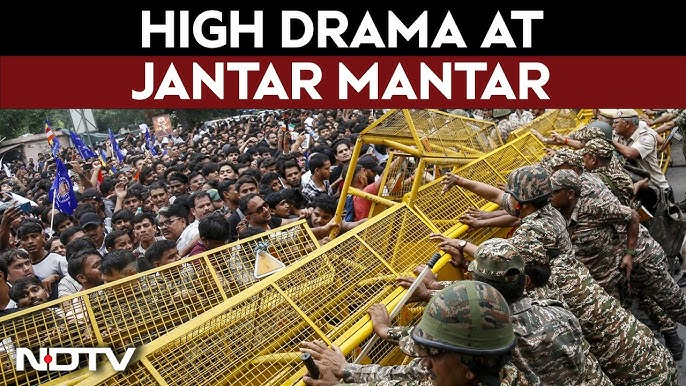
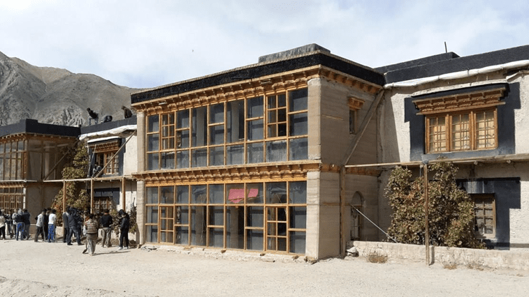
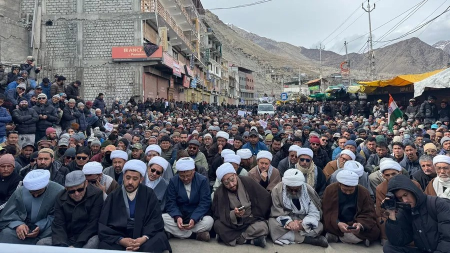
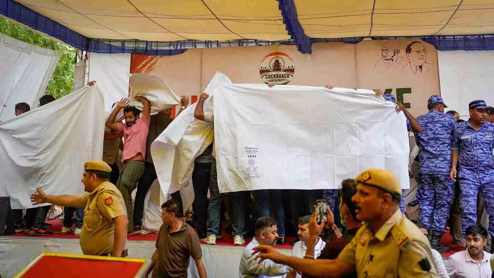
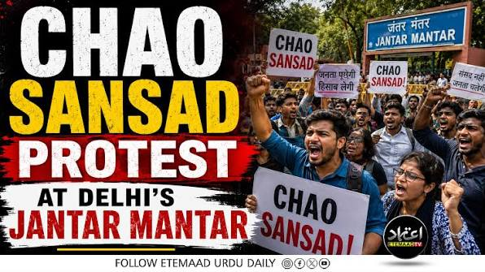

The Jantar Mantar
Epicenter
A nationwide examination crisis and allegations of irregularities fueled a youth-led movement demanding accountability across India's education system. At the center of the agitation was Sonam Wangchuk, undertaking an indefinite hunger strike in the summer heat of Delhi. [1]

From SECMOL to
National Outrage
Why is a climate activist fasting for national education reform? Because Sonam Wangchuk has fought the broken education system his entire life.
A Broken System
In 1988, Wangchuk realized 95% of Ladakhi students failed because the mainstream rote-learning curriculum was alien to them. He co-founded SECMOL to build alternative schools.
The 2026 Crisis
Decades later, the national education system is imploding. The NEET-UG corruption and paper leaks revealed a system that fails its youth at an industrial scale. Wangchuk could no longer stay silent.

The Government
Response
As the Cockroach Janta Party (CJP) and Wangchuk occupied Jantar Mantar, Parliament entered a state of gridlock. The Prime Minister promised "fast-track courts," but protesters demanded systemic overhaul and the resignation of the Education Minister.
The government refused to meet at the protest site, insisting on closed-door meetings. The protesters refused to leave. The tension hit a boiling point.
The Core Demands
- Resignation of the Union Education Minister.
- Accountability for the NEET-UG paper leaks.
- Protection against punitive legal action for students.

Tear Gas & Barricades
When student demonstrations mobilized for the "Chalo Sansad" (March to Parliament), authorities enforced Section 163 prohibitory regulations and deployed barricades.
The Hospital Transfer
Delhi Police moved into the protest site early on July 18 and shifted Wangchuk from Jantar Mantar to hospital after his health deteriorated during the 20th day of his fast. Protest organisers described the removal as forced, while authorities stated the action followed medical advice and court directives. [1][4]
Chalo Sansad March
Following the police action, thousands of demonstrators attempted to march toward Parliament in defiance of prohibitory orders. Police deployed tear gas shells and water cannons, detaining numerous student demonstrators. [5]
26-Day Fast Concludes
At Medanta Hospital, Sonam Wangchuk formally concluded his 26-day indefinite hunger strike after receiving assurances regarding student protection and formal examination reforms. [6]

A Global Echo
Coverage of the protests spread beyond India, bringing international attention to the dispute over examination integrity and education policy. [5][6]
Solidarity gatherings occurred in multiple educational hubs across the country. Images and reports from Jantar Mantar circulated widely in international press outlets, drawing commentary on systemic testing procedures and transparency.
"This controversy reflects a critical generational conversation on examination integrity and the institutional future of higher education."

Resignation & Resolution
Ministerial Resignation
On July 25, 2026, Union Education Minister Dharmendra Pradhan submitted his resignation amid mounting political scrutiny and youth demonstrations. The portfolio was subsequently reassigned to Pralhad Joshi. [7]
Fasting Concluded
Sonam Wangchuk formally broke his 26-day fast on July 23 after receiving medical stabilization. In subsequent statements, he emphasized the importance of honoring commitments made to students. [6]
Official Inquiries
The Central Bureau of Investigation continued charge-sheet filings concerning question-paper leaks, while protest organizers scheduled regional meetings to debate policy proposals. [8]
Sources & Methodology
This independent visual chronicle compiles and contextualizes reporting from primary news agencies, official government communiqués, and court proceedings. Events are categorized to distinguish confirmed public records from reported allegations and protest statements.
The Indian Express (July 18, 2026)
"Police move Sonam Wangchuk to hospital from Jantar Mantar after fast." Reporting confirms the start of Wangchuk's fast on June 28, 2026, and his subsequent transfer to Safdarjung/Medanta Hospital following medical recommendations.
SECMOL & Alternative Education Records (1988–2024)
Historical documentation of the Students' Educational and Cultural Movement of Ladakh (SECMOL), established in 1988 to reform localized education curricula.
India Today & Parliament Briefs (July 23, 2026)
Contemporary coverage of parliamentary deliberations regarding fast-track judicial courts for examination-leak inquiries and executive responses to student petitions.
Delhi Police Press Release & Court Directives (July 18, 2026)
Official police notifications and Delhi High Court filings concerning the enforcement of Section 163 prohibitory regulations and medical emergency transfers from Jantar Mantar.
Reuters / Internazionale (July 20, 2026)
"India's student movement supporters march toward Parliament despite police ban." Verified reports documenting barricades, tear-gas dispersal, and student detentions during the Chalo Sansad demonstration.
Al Jazeera & Hospital Bulletins (July 23, 2026)
"Indian activist Wangchuk ends 26-day hunger strike over exam paper leaks." Independent corroboration of the conclusion of Wangchuk's hunger strike following negotiations and assurances.
President of India, Press Communiqué (July 25, 2026)
Official notification of the President accepting the resignation of Union Education Minister Dharmendra Pradhan, and directing Cabinet Minister Pralhad Joshi to assume charge of the Ministry of Education.
Central Bureau of Investigation (CBI) Bulletins (July–August 2026)
Official status reports and charge-sheet summaries regarding arrests and memory-reconstruction inquiries into the NEET-UG testing protocols.
Editorial Notice: Voice of Ladakh is an independent, non-partisan interactive documentary by Shreesha Rao K. Last cross-verified against verified public records on October 4, 2026.